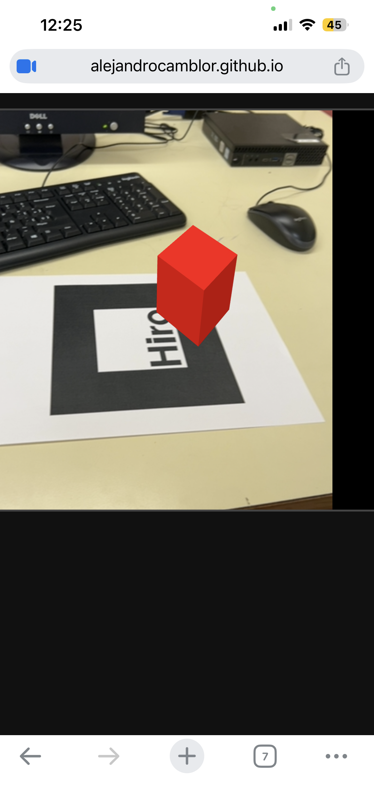
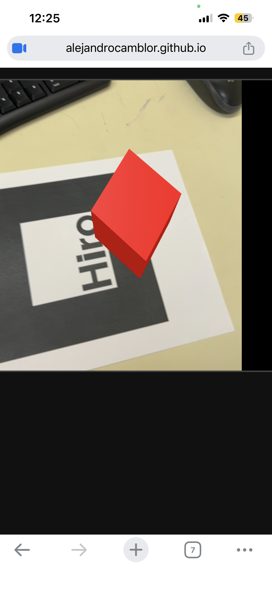
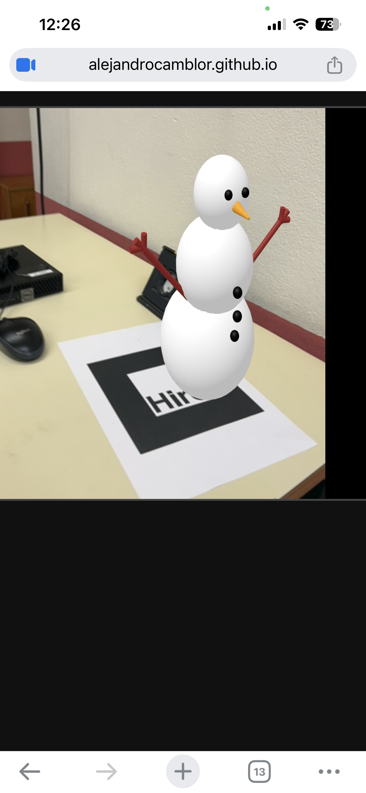
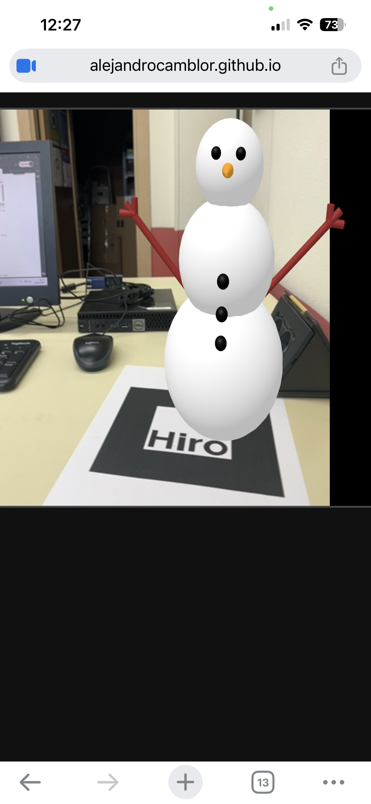

En esta página iré incorporando las evidencias de las tareas del bloque de realidad aumentada.
Lo primero que he hecho ha sido entrar a Phoenix Code y crear lo necesario (carpetas, archivos html...). Tras esto he subido el codigo de camblor_alejandro_ra_01 y lo he abierto desde el móvil, pues el ordenador no tiene webcam. Luego he enfocado el papel que nos entregó Alberto encima de la mesa y apareció un cubo rojo encima de este. Le he sacado fotos al movil y las he puesto en camblor_alejandro_ra_evidencias, posteriormente ha haberlas cargado en la carpeta imágenes.
Enlace a la experiencia: Abrir tarea 1


Si no salen las imágenes, míralas AQUÍ

